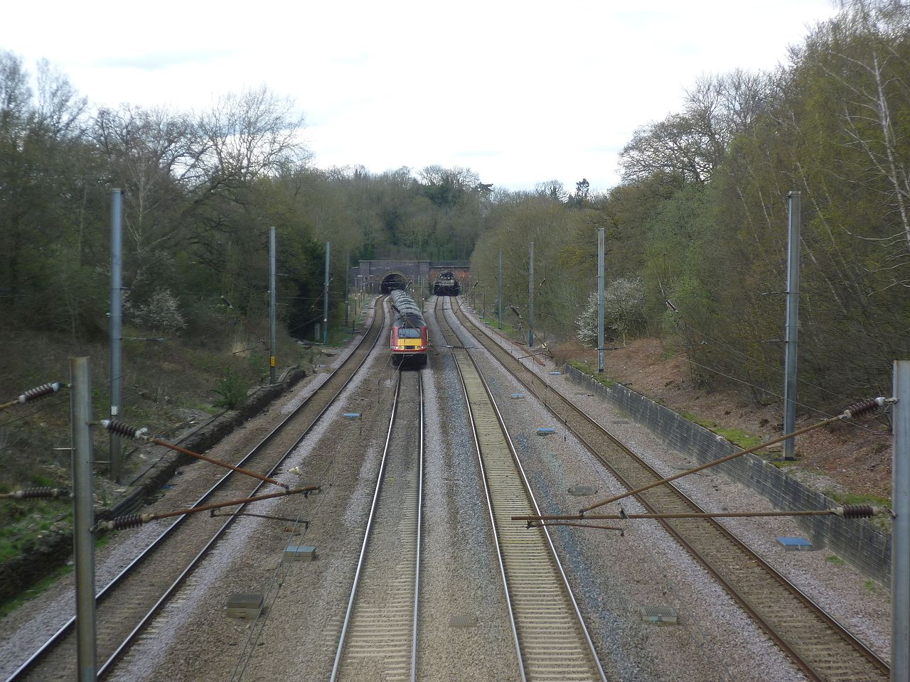

LNER Class A3 4472 Flying Scotsman je parna lokomotiva tipa Pacific (sa rasporedom točkova 4-6-2), napravljena 1923. godine za
Londonske i severoistočne železnice (LNER) u fabrici Doncaster Works. Konstruisao ju je Najdžel Gresli. Korišćena je za ekspresne
međugradske vozove na
East Coast Main Line
liniji od strane kompanije LNER i njenih naslednika kao i za saobraćaj u istočnim i severoistočnim regijama od strane kompanije
British Railways,
a posebno na liniji London - Edinburg zbog koje je i nazvna Leteći Škotlanđanin.
Postavila je dva rekorda. Postala je prva lokomotiva koja je zvanično vozila brže od 100 milja na sat (160,9 km/h), 30. novembra 1934.,
a zatim je postavila rekord u neprekidnoj dužini vožnje kada je 8. avgusta 1989. u Australiji prešla 422 milje (679 km) bez zaustavljanja.
Nakon što je povučena iz redovnog saobraćaja 1963. godine, posle prevaljenih 2,08 miliona milja, lokomotiva Flying Scotsman uživa veku slavu,
a brigu o njoj redom preuzimaju britanski biznismeni Alan Pegler, William McAlpine, Tony Marchington i na kraju Nacionalni železnički muzej
(National Railway Museum - NRM)
Uporedo sa vučom posebnih turističkih vozova organizovanih za entuzijaste i ljubitelja parnih lokomotiva u Velikoj Britaniji, lokomotiva je
dodatno bila angažovana na turama po Sjedinjenim Državama i Kanadi od 1969. do 1973. i Australiji 1988/89. Leteći Škotlanđanin se opisuje kao
najslavnija parna lokomotiva na svetu. U anketi iz 2015. u kojoj su učestvovli ispitanici sa četiri kontinenta, ponovo je rangirana kao najpoznatija
lokomotiva.

East Coast Main Line (ECML) je 393 milje (632km) dugačka pruga između Londona i Edinburga preko Peterburga, Donkastera, Jorka,
Darlingtona, Durama i Njukasla; elektrificirana je celom dužinom. Ova ruta je ključna transportna arterija na istočnoj strani Velike
Britanije i paralelna je sa auto-putom A1.
British Railways (BR) koja od 1965. godine posluje kao British Rail je državna železnička kompanija koja je obavljala najveći
deo transporta u Velikoj Britaniji u periodu 1948-1997.
"Dvostruka strela" na logou British Rail-a, formirana od dve međusobno zakačene strelice,
predstavlja pravac putovanja dvostrukim
kolosekom, a poznata je pod nadimkom "strelica neodlučnosti".